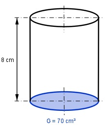

Aufgabe 24 Ein Zylinder hat einen Grundfläche G von 70 cm² und eine Höhe h von 8 cm. Wie groß ist a) sein Durchmesser d, b) sein Volumen V?

a) G = л * r² | : л G --- = r² |√ л r = = = 4,7 cm --> d = 2 * r = 2 * 4,7 cm = 9,4 cm b) V = G * h = 70 cm² * 8 cm = 560 cm³